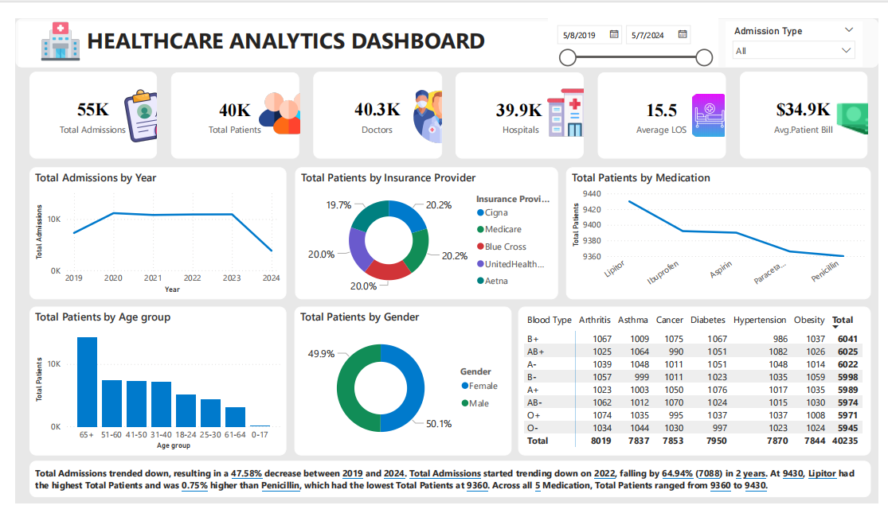
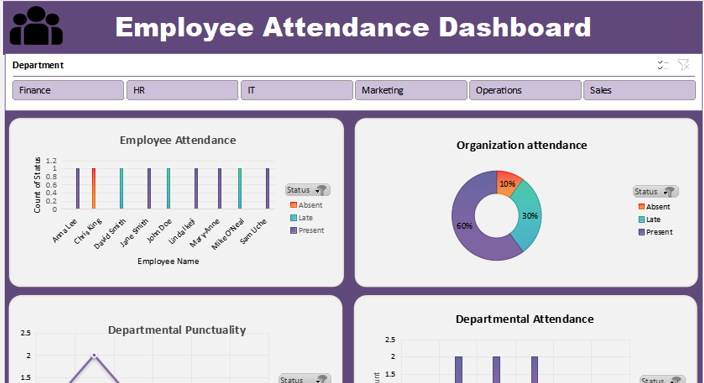
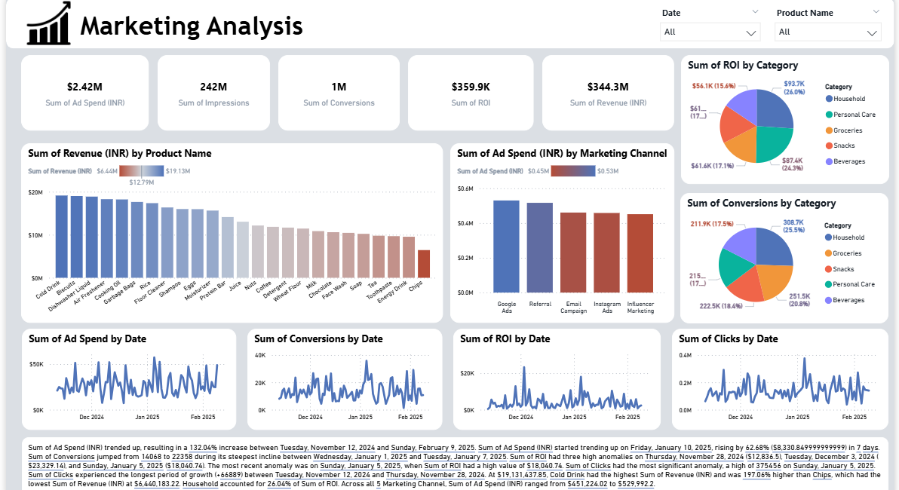
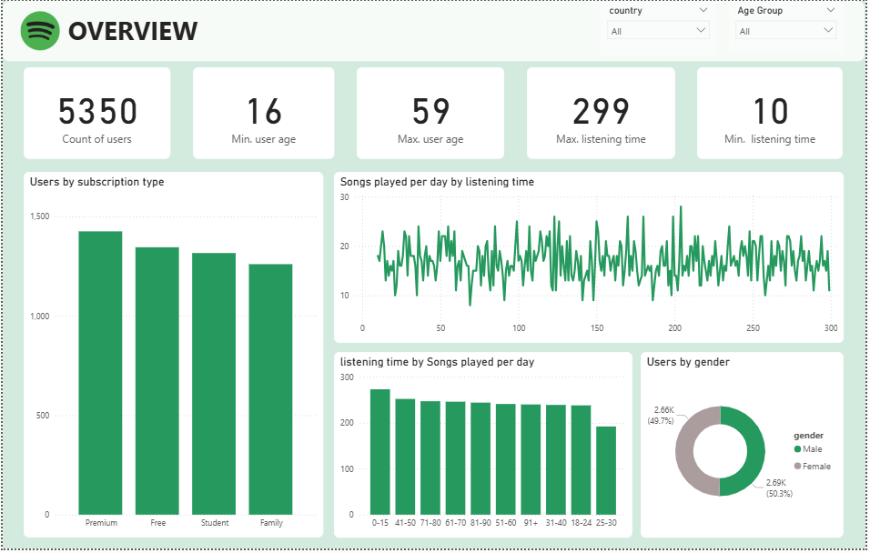
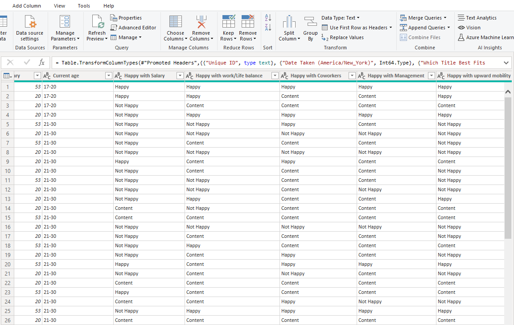
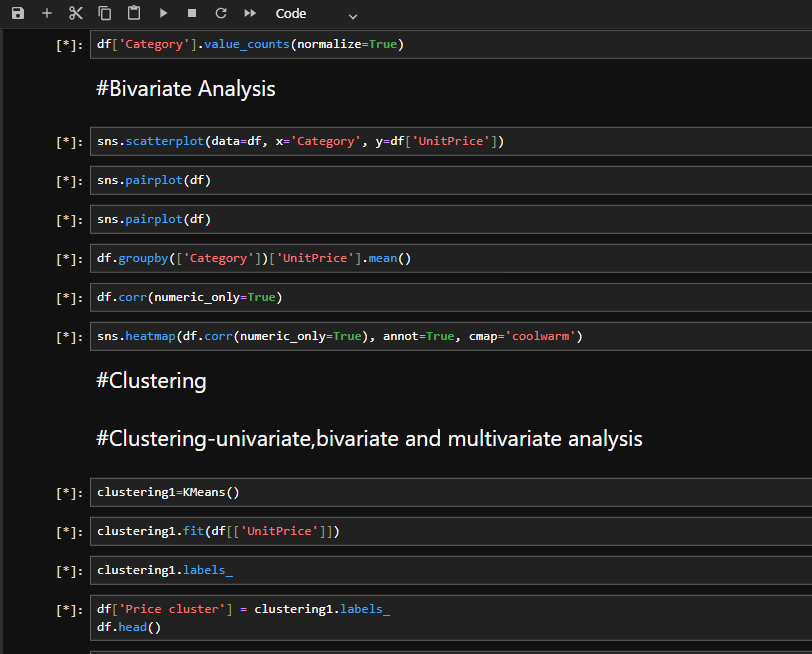

This comprehensive Power BI Healthcare Analytics Dashboard showcases my data skills, from cleaning raw healthcare data to impactful visualization. It synthesizes key metrics like 55K Admissions and Average Length of Stay (LOS) while revealing a 47.58% decline in admissions between 2019 and 2024.
The analysis provides deep insights into patient demographics, insurance providers, and medication usage, essential for strategic planning in the medical sector.


I used SQL to perform in-depth analysis on a COVID-19 dataset, calculating the Percent Population Vaccinated using Window Functions for cumulative sums.
This query is the core of my data exploration, combining deaths and vaccinations tables to reveal key population health metrics.

From my Jupyter notebook, I performed customer segmentation by analyzing the distribution of product unit prices.
Dive in to see how this Kernel Density Estimate (KDE plot) helped define price sensitivity and identify distinct customer clusters for targeted marketing.

I initiated this project by leveraging ChatGPT to generate a raw employee attendance dataset, which I cleaned and structured to ensure data integrity and accuracy.
The Dashboard provides an insightful overview of the attendance status and departmental punctuality, delivering clear, actionable insights for management and HR.

This detailed Marketing Analysis dashboard tracks a $2.42M Ad Spend to measure ROI and Conversions across channels and products, providing deep insights into performance.
Explore the daily trends, highest-earning products, and the specific marketing channels driving revenue and conversion spikes for strategic optimization.

This detailed Power BI Spotify Overview, built using a Kaggle dataset of 5350 users, segments users by subscription type and gender.
Dive in to analyze the crucial relationship between the songs played per day and the users' total listening time, revealing engagement patterns.

This meticulously cleaned and transformed dataset is the foundation for a comprehensive Power BI analysis, ensuring data quality across 15 career metrics.
It represents the final, structured data, perfectly shaped and ready for creating accurate measures and visualizations.

This is the end product of a rigorous data cleaning applied to 300+ career survey responses across 15 diverse metrics.
The resulting structured, error-free dataset serves as the source of truth for extracting deep, reliable insights into modern career satisfaction and trends.

This efficient Star Schema data model links 3 core tables (customers, sales, products) using one-to-many relationships.
The structure is optimized for fast analytical queries, enabling robust exploration of sales performance and customer trends.

Data Science Career Dashboard: Uncover what truly drives 300+ industry professionals, including job satisfaction scores (Salary vs. W/L balance) and career switch rates by sector.
See which countries and programming languages dominate the current job market.

This analyzes survey data across 307 professionals to reveal career trends, top programming languages, and job satisfaction based on salary and work/life balance.
Explore deep insights into educational backgrounds and how often professionals switch into Data roles from other industries.

A concise Sales Overview dashboard covering 100 sales, 20 customers, and 10 products.
It immediately highlights a 5-year downward trend in sales volume while detailing the unit price and quantity sold for every product.

A clean data dashboard uncovering insights into developer lifestyles, programming choices, and salary trends.
Transforming raw survey data into clear, visual intelligence

This project explores data relationships through bivariate analysis and visual clustering using Python.
It reveals patterns and groupings that help transform raw data into actionable insights.

A clean and powerful data dashboard showcasing trends in tech careers, work-life balance, and programming preferences.
Explore how I turned survey responses into visual intelligence.